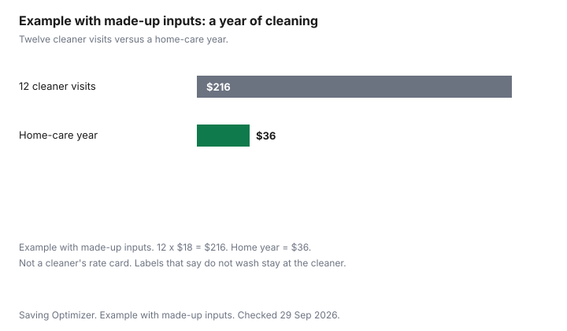

Clothing · Canada
Dry Cleaning Costs vs Home Care: Which 'Dry Clean Only' Items You Can Safely Wash

"Dry clean only" is a care instruction, not a bill you have to accept every week. In Canada, care words and symbols are voluntary. When a dealer prints them, they have to describe an appropriate method and they must not be false or misleading. The Office of Consumer Affairs still publishes the symbol guide, and it says the national care-labelling standard was withdrawn in October 2017. This page uses that guide for what the dry-clean marks permit, then sets out home-care options as caution, not a guarantee. Detergent prices stay on the cost-per-load guide. Wash temperature and the energy bill stay on cold-water laundry. The dryer itself stays on the dryer energy guide. How often you need to clean a thing you wear is part of cost per wear.
Key takeaways
- The consumer-affairs guide lists three professional dry-clean marks: normal cycle, any solvent except trichloroethylene; normal cycle, petroleum solvent only; and do not dry-clean. Separate marks say wet-clean and do not wet-clean.
- Care labelling is not mandatory. If it is printed, the Competition Bureau guide says it must not be false or misleading and must reflect an appropriate method. Words may be English or French. Quebec has additional French-language rules.
- A hand-wash symbol permits gentle hand washing in water not exceeding 40°C or, on the cooler symbol, 30°C. A do-not-wash mark does not become optional because the shirt looks sturdy.
- Ironing symbols allow steam except where a separate do-not-steam mark appears. A home steamer is not the dry-clean circle.
- Example with made-up inputs: 12 cleaner visits at $18 is $216 in a year. A home year priced at $36 is $36. Neither figure is a cleaner's rate card.
What 'dry clean only' really means
The Competition Bureau's guide to the Textile Labelling and Advertising Regulations says a dealer may not sell, import, or advertise a prescribed consumer textile article unless it is labelled with fibre content and dealer identification as the Act and Regulations require. Care information is a different rule.
The guide says care words or symbols, Canadian, ASTM, or international, are not mandatory. Where care information is provided, it must not be false or misleading, and it must accurately reflect an appropriate method of care. Written instructions may be in English or French. Quebec has additional French-language requirements. The Bureau points readers to the Office québécois de la langue française for those. The same guide describes CAN/CGSB-86.1-2003 as a voluntary standard, published in December 2003, and says the Bureau left businesses to decide whether to adopt it.
The Office of Consumer Affairs guide, as of 29 Sep 2026, says its material is for information only and that the Care Labelling of Textiles national standard was withdrawn by the Canadian General Standards Board in October 2017. Five symbol families remain in that guide: washing, bleaching, drying, ironing, and professional cleaning. For professional textile care, the guide prints three dry-clean descriptions. A normal cycle with any solvent except trichloroethylene. A normal cycle with petroleum solvent only. Do not dry-clean. A supplementary row adds wet-clean and do not wet-clean. Wet-clean is not a permission slip to use your washer. It is its own mark. If the label says dry-clean and also says do not wash, home laundering is outside what that label permits. If the words and the symbols disagree, use the more cautious reading or ask the seller. A false care claim is the dealer's problem under the Act. A ruined jacket is yours.
| Mark the guide describes | What the guide says it permits |
|---|---|
| Dry-clean, normal cycle | Any solvent except trichloroethylene. |
| Dry-clean, normal cycle, petroleum | Petroleum solvent only. |
| Do not dry-clean | Do not dry-clean. |
| Wet-clean | The guide lists the words "Wet-clean" as a supplementary mark. It does not define a home method under that row. |
| Do not wet-clean | Do not wet-clean. |
Fabrics that tolerate hand-washing
The symbol guide does not publish a list of fabrics that are safe to wash at home. It publishes wash symbols, and it publishes ironing temperatures it recommends for named fibres.
Those are different permissions. Hand washing, where the symbol says so, is "wash gently by hand" in water not exceeding 40°C, or not exceeding 30°C on the cooler hand-wash symbol. A separate supplementary mark says do not wring. Machine-wash symbols name maximum water temperatures from 30°C to 95°C and a setting: normal, permanent press, or delicate. Do not wash means do not wash.
The ironing rows are the closest the guide comes to naming fibres. High, not exceeding 200°C, is the recommended temperature for cotton and linen. Medium, not exceeding 150°C, is the recommended temperature for polyester, rayon, silk, triacetate, and wool. Low, not exceeding 110°C, is the recommended temperature for acetate, acrylic, modacrylic, nylon, polypropylene, and spandex. There is also a do-not-steam mark and a do-not-iron mark. A medium iron for wool is not a statement that wool survives a washer. If the care label has a hand-wash symbol, the guide's hand-wash description is the ceiling. If the label has do not wash, do not wet-clean, or dry-clean without a wash symbol, home washing is outside the label. The table below is caution. It is not a guarantee, and it is not permission to ignore the label in your hand.
| Fibre or garment | What the symbol guide supports | Risk if you wash at home anyway |
|---|---|---|
| Cotton or linen | High iron, not exceeding 200°C, is the recommended iron temperature. Wash only at the temperature and setting the wash symbol allows. | Lower, when a machine-wash symbol is present. High, when the label says do not wash. |
| Wool | Medium iron, not exceeding 150°C. Hand wash only if the label shows the hand-wash symbol, gently, not exceeding 40°C or 30°C as that symbol states. Do not wring if that mark is present. | High if you machine-wash a do-not-wash or dry-clean label. Felting and shrinkage are the failure you are accepting. |
| Silk, rayon, triacetate | Same medium iron recommendation. Wash only if a wash symbol says so. | High on a dry-clean or do-not-wash label. Water spots and shrinkage are the usual damage. |
| Polyester | Medium iron. Machine wash only within the symbol's temperature and cycle. | Lower when the symbol allows a 30°C or 40°C wash. The symbol still sets the ceiling. |
| Acetate, acrylic, nylon, spandex | Low iron, not exceeding 110°C. Wash only as the wash symbol allows. | Heat from an iron or a dryer above the symbol is the risk the guide is limiting. |
| Anything marked do not wash or do not wet-clean | Follow the professional mark: solvent limits, or do not dry-clean if that is the mark. | Home washing is outside the label. This table does not bless an exception. |
Home steamers and spot cleaning
The ironing symbols say you may iron with or without steam by hand, at the temperature for that row, except where the separate do-not-steam symbol appears, and except where the label says do not iron or press. A garment steamer is a way to put steam on a hanging garment.
It is not listed in the professional-care rows. It does not replace a dry-clean symbol. Use it on cloth the ironing row allows, and stop where the label says do not steam. An Amazon.ca storefront is one place people buy a steamer. That is an offer type. It is not a recommendation of a model, and it does not change the symbol.
Spot cleaning follows the bleach row, not a kitchen recipe. The guide lists three bleach marks: any bleach when needed, non-chlorine bleach only, and do not bleach. Do not upgrade a do-not-bleach mark because a bottle says it is gentle. Test any treatment on an inside seam you will not see, and stop if the colour moves. This page does not give a vinegar or solvent recipe. The care guide makes the same refusal. Heat sets many stains. Treat the spot before the dryer, and only with a method the label allows.
Winter coat and down cleaning
A winter coat is one garment with one label, not a category that shares a wash cycle. The winter coat guide is about how many winters you get from the purchase.
This section is about the clean. If the label says do not wash, the professional symbol on that label is the path, including the solvent limit if the circle says petroleum only. If the label shows a machine-wash symbol, the maximum water temperature and the cycle on that symbol are the ceiling. Tumble symbols in the same guide include high heat not exceeding 75°C, medium not exceeding 65°C, low not exceeding 55°C, no-heat air, and do not tumble dry. Use the one that is printed.
Down and other fills hold water. If a wash symbol allows the coat in the machine, dry it until it is fully dry, on the tumble setting the label allows. A coat put away damp is a mildew problem, not a saving. If no wash symbol is present and the professional mark says dry-clean, a home tub is outside the label. Do not invent a down-wash recipe from a forum. The maker's care page for that coat, if you still have it, is the other document to read beside the sewn-in label.
Dry cleaner costs and loyalty cards
This guide does not cite a cleaner's rate card, a per-shirt price, or a loyalty percent. Ask the shop what a suit, a coat, a shirt, and a household textile cost before you build a weekly habit, and ask what a card or a prepaid bundle changes in dollars.
A card that is described only as "save more" is not a number you can put in a budget. Write the price down. Then count the visits.
Example with made-up inputs. Twelve dry-clean visits at $18 is $216. A home-care year priced at $36, for soap and steam on garments whose labels allow it, is $36. The $18 and the $36 are made up. They are not a cleaner in your city and not a steamer listing. If your real shirt price is higher, or you only visit four times, redo the multiplication. Garments marked do not wash stay in the cleaner column no matter how attractive the home column looks. The chart is the count of visits, not a reason to ignore a circle.

Sources
- Office of Consumer Affairs, Guide to Apparel and Textile Care Symbols, ised-isde.canada.ca, as of 29 Sep 2026. Information only. National standard withdrawn October 2017. Professional, wash, bleach, dry, and iron marks quoted above.
- Competition Bureau, Guide to the Textile Labelling and Advertising Regulations, competition-bureau.canada.ca, as of 29 Sep 2026. Fibre content and dealer identification are the mandatory core for prescribed consumer textile articles. Care labelling is not mandatory. Where provided, it must not be false or misleading and must reflect an appropriate method. English or French. Quebec French-language rules noted.
- No dry-cleaner price, loyalty percent, or steamer model is cited. The annual bars are made-up inputs.
Frequently asked questions
Can I wash 'dry clean only' clothes at home?
Only if the label also gives you a wash symbol that permits it. A dry-clean mark, a do-not-wash mark, or a do-not-wet-clean mark means home washing is outside the label. The Office of Consumer Affairs guide describes the symbols. It does not publish a list of fabrics that are safe to ignore them. The risk table on this page is caution, not a guarantee.
What do the dry-cleaning symbols mean?
The consumer-affairs guide lists a normal dry-clean cycle with any solvent except trichloroethylene, a normal cycle with petroleum solvent only, and do not dry-clean. Separate marks say wet-clean and do not wet-clean. Care labels are voluntary. If a dealer prints one, the Competition Bureau guide says it must not be false or misleading and must match an appropriate method.
Which fabrics should always go to a cleaner?
The ones whose label says do not wash, do not wet-clean, or dry-clean without a wash symbol. Wool, silk, and rayon appear on the guide's medium-iron row, which is an ironing temperature, not permission to use a washer. Cotton with a machine-wash symbol does not need a cleaner merely because the cloth is cotton.
Does a steamer replace dry cleaning?
No. Ironing symbols allow steam except where a separate do-not-steam mark appears. A home steamer is not the professional dry-clean circle. It can refresh a garment the ironing row allows. It does not satisfy a dry-clean instruction, and it is not a product recommendation.
How do I cut dry-cleaning costs?
Count the visits and ask the shop for a dollar price before you rely on a loyalty card. This guide does not cite a cleaner's rate or a loyalty percent. Example with made-up inputs: 12 visits at $18 is $216, and a home year at $36 is $36. Garments marked do not wash stay with the cleaner. The home column is only for labels that allow it.
Researched and drafted with AI assistance and fact-checked against official Canadian sources. How we create content.